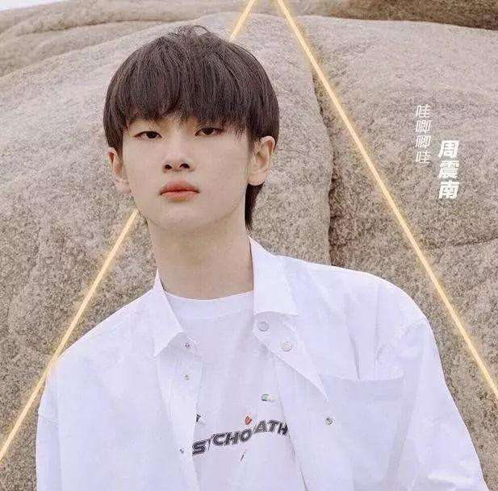
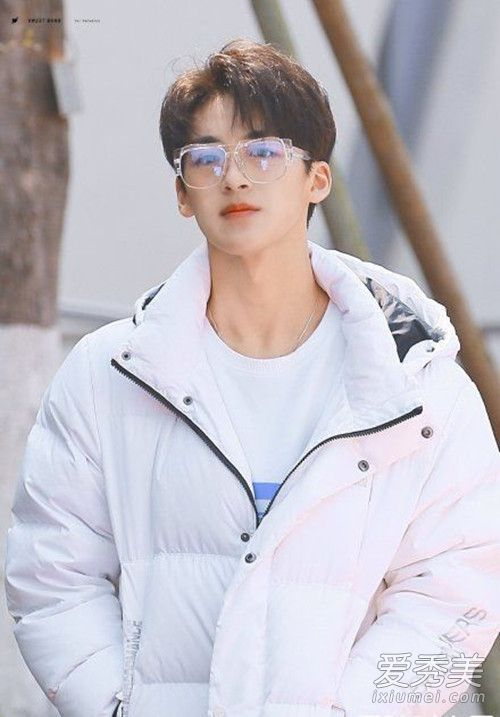
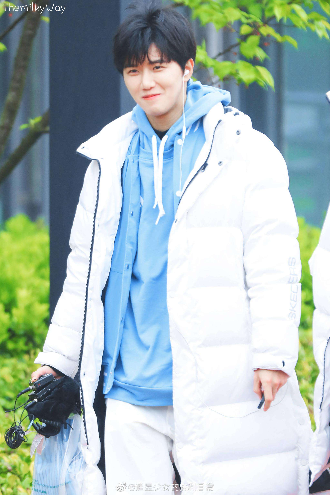
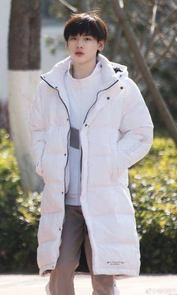
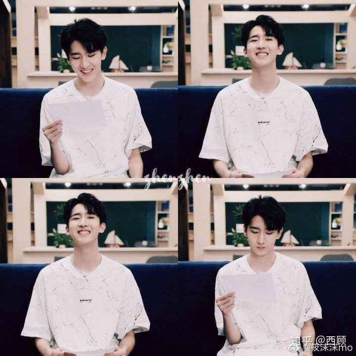
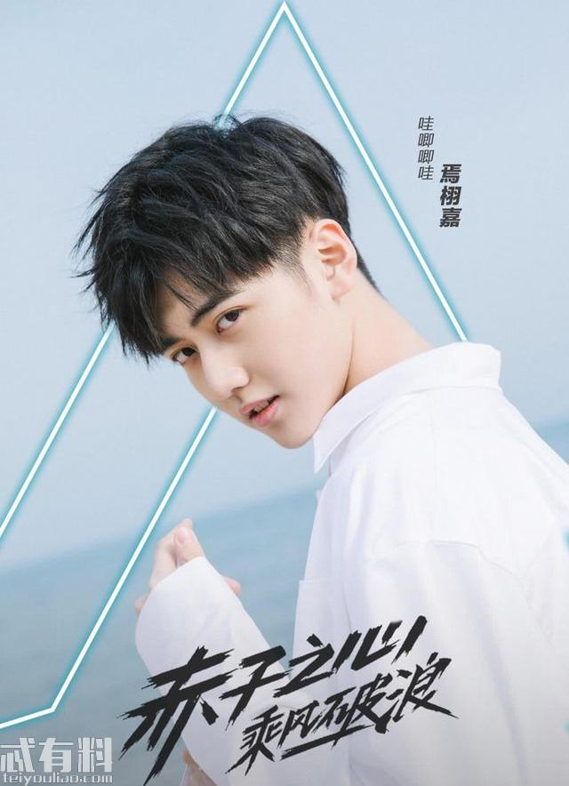
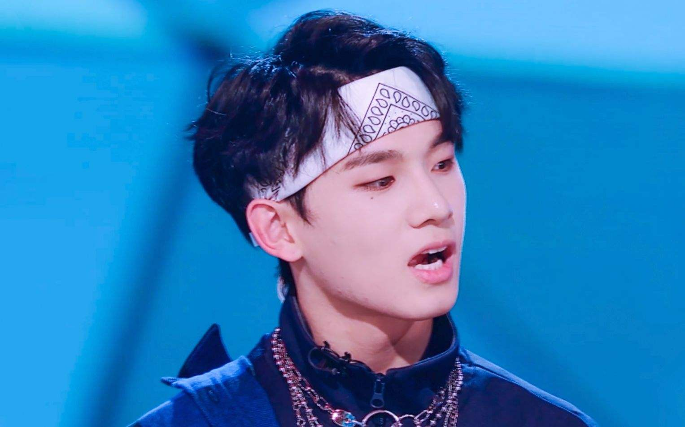

周震南（Vin），
2017年，12月14日，推出首张个人EP专辑《V》。同年，参加腾讯视频偶像搭档对决音乐真人秀节目《潮音战纪》，与Samuel获得总决赛冠军及“最强潮音搭档”称号。2019年2月26日，他的原创歌曲特曲《Little Star—V的序曲》正式上线；同年，作为选手参加腾讯视频青年团训节目《创造营2019》。

何洛洛，原名徐一宁，2001年5月4日出生于浙江省杭州市萧山区 ，中国内地流行乐男歌手，跨次元男子团体“易安音乐社”社长。
2017年，成为易安音乐社一期生 ；3月30日，宣布正式出道；12月18日，随易安音乐社获得“1218直播节花椒之夜”年度新晋组合奖 。2018年，随易安音乐社推出组合首张音乐EP《易安异能 亿分之六》。2019年4月6日，作为选手参与录制的青年团训选秀节目《创造营2019》在腾讯视频首播。
夏之光，中国内地男歌手、演员，男子唱跳组合“X玖少年团”成员，就读于上海戏剧学院。
2016年9月，以舞蹈担当的身份加入“X玖少年团”；之后，随X玖少年团推出同名数字专辑《X玖》；2017年4月2日，随组合举行“以己之名”上海演唱会；2018年1月，随组合推出第二张专辑《Keep Online》 ；之后，随组合举行“Keep Online”巡回演唱会，并出演航空励志青春题材电视剧《九千米的爱情》 。2019年，参与录制青年团训选秀综艺节目《创造营2019》。

陆思恒，外号“变相怪杰”中国内地舞蹈演员、编舞师、流行乐歌手。
2015年，参加浙江卫视才艺养成励志节目《燃烧吧少年》，获得16强，从而正式进入演艺圈。2016年，发布与陈泽希合作的舞蹈作品《BUMP》；同年，作为体验团成员参加陕西卫视旅游真人秀节目《丝路上有你》。2018年，参加爱奇艺街舞文化推广类节目《热血街舞团》，入选全球线上海选7强。2019年4月6日，作为选手参与录制的青年团训节目《创造营2019》在腾讯视频上线。

翟潇闻，中国内地男歌手。
2018年，参加腾讯录制的视频综艺《明日之子第二季》 。2019年，参加青年团训选秀节目《创造营2019》 。2019年，参演由李木戈导演的青春校园剧《暗恋橘生淮南》。

2019年4月6日，作为选手参与录制的青年团训选秀节目《创造营2019》在腾讯视频上线

焉栩嘉，，中国内地男演员、歌手，中国男子唱跳团体“X玖少年团”成员。
2015年，作为选手参加浙江卫视才艺养成节目《燃烧吧少年》。2016年4月，焉栩嘉凭借作品《你幸福我快乐》荣获第13届世界民族电影节“最佳新星奖”；同年9月，以rap担当的身份加入“X玖少年团”。2017年3月31日，参演的都市悬疑片《嫌疑人X的献身》于全国公映；同年4月2日，随组合举行“以己之名”上海演唱会；同年9月，参演古装言情网络剧《哦！我的皇帝陛下》。2018年1月，随组合推出第二张专《Keep Online》 ；同年10月4日，随组合举行“Keep Online”杭州演唱会 。2019年，参与录制青年团训选秀综艺节目《创造营2019》

姚琛，《创造营2019》学员。
2016年，姚琛与周震南同在海外训练，因为种种原因没能实现梦想 。2019年，参加腾讯视频青年团训节目《创造营2019 。
牛超，腾讯视频青年团训节目《创造营2019》选手。
2018年，参加芒果TV出品的恋爱高阶课堂《真心大冒险》 。2019年，参加腾讯视频出品的青年团训节目《创造营2019》 ，成为首个抢位成功的A班学员。